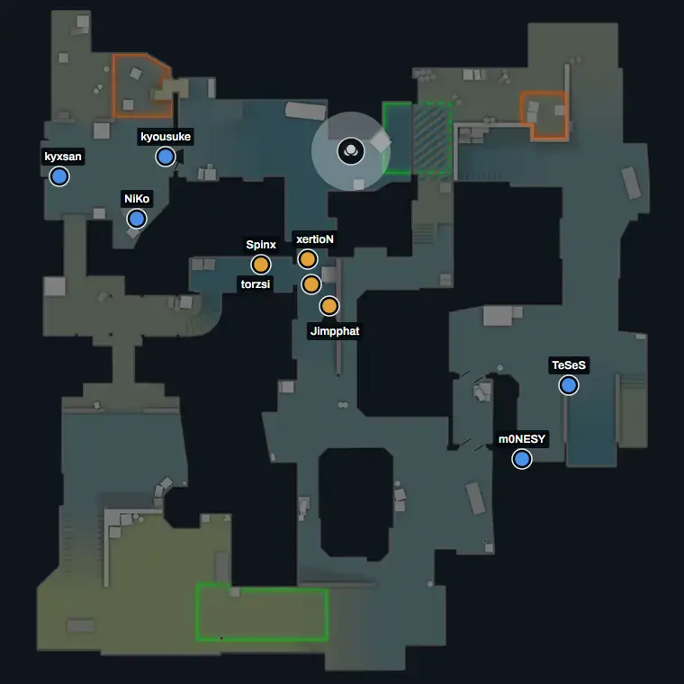

Projeto de portfólio · Python e JavaScript · site estático
Lê gravações de partidas de Counter-Strike 2 e mostra o que decidiu cada jogo
Cada partida vira uma página: o replay no mapa, o round que virou o jogo e o que cada jogador fez. Os números são conferidos contra a estatística oficial, e quando o dado não sustenta uma afirmação a página diz que não sabe.
título, frase e botões: texto da landing, no builder (scripts/build_site.py); o link "Ver uma partida" segue partida_de_exemplo()
- 410 de 410placares iguais aos oficiais
- Kills e mortes de 410 jogadores em 41 mapas profissionais batem com a HLTV, um a um.
- 0,079de erro médio no rating
- Em 430 jogador-partidas avaliadas fora da amostra (correlação 0,966). É uma implementação própria da metodologia publicada, não o número da HLTV.
- 100%de acerto no botão do arremesso
- A força de 6.846 granadas inferida só pela posição e conferida contra o que a demo grava, em 13 partidas fora da amostra.
52 partidas: 43 profissionais, de 9 times, e 9 da FACEIT, em 8 mapas.
valores, rótulos e frases: numeros_citaveis.json via tres_numeros() e blocos_de_texto(); o rótulo curto ("placares iguais aos oficiais") troca de texto no JSON, ver "Mudanças de dados e textos"

Partidas 9
cards: manifesto + insights de cada partida; nome do lado: nome canônico (decisão 38) ou "Time de <nick>" (regra nova, Python); frase: "Decidida no round N · MVP X" ou "Nenhum round decidiu sozinho", gerada em Python (decisão 18), no lugar de "X impôs Ns de cegueira". Ordem: profissionais primeiro, mais recentes antes.